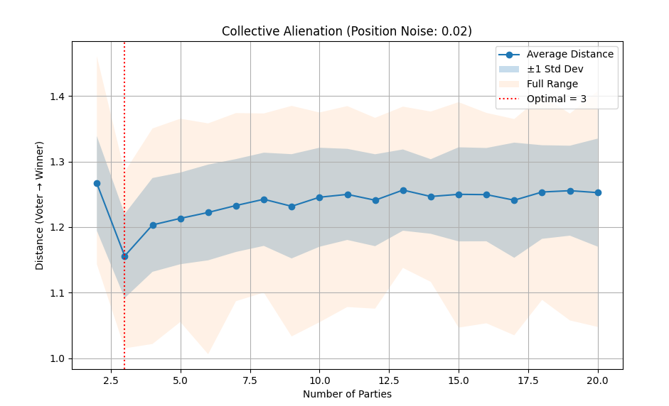

Tejas Kashyap’s agent-based simulations exploring how party counts, ideology, and turnout interact to shape democratic outcomes.
Starting from a 2024 US election predictor, I built a multi-dimensional vector model using distance formulae to find the "optimal" number of parties. The simulation captures voter "happiness" in aggregate by measuring how well a system's parties actually represent the ideological positions of the electorate.
Read more →While I expected a sweet spot between 2-party division and multi-party fragmentation, the 3-party system was the standout. It improved voter-to-party distance by over 0.1 and proved to be one of the most stable, least noisy configurations tested.
Read more →Using Monte-Carlo methods, I ran 10,000 elections across 19 different party setups to eliminate volatility. The model covers scenarios where parties are assigned fixed positions with realistic noise to mirror the slight shifts of real-world politics.
Explore →I'm looking to expand the model to include more complex variables like ranked-choice voting, geographic concentration, and how media echo chambers affect voter "firmness" over time.
See plans →"Collective alienation" measures the average distance between a voter's 10D ideology and their closest party; a high score means voters feel unrepresented. After testing systems from 2 to 20 parties, the data showed that while more parties generally reduce alienation, the three-party setup provides the most significant "bang for your buck" before reaching diminishing returns and increased noise.
Full Analysis
Collective Alienation vs. Number of Parties (Position Noise: 0.02)